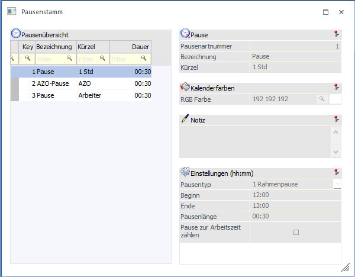
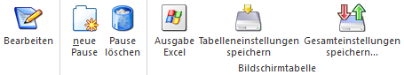
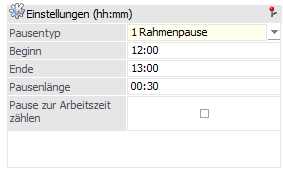
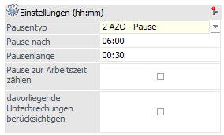
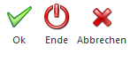

Über den Menüpunkt
1 SMART
1 Stammdaten
1 Pausenstamm
können die Pausen für die Zeiterfassung angelegt werden.

Pausenübersicht
Folgende Spalten sind reine Informationsfelder. Sobald eine Pause angelegt ist, wird in diesem Bereich die Zusammenfassung der Pause angezeigt. Innerhalb der Spaltenüberschrift kann nach Bezeichnungen usw. gesucht werden.
Ø Key
Ø Bezeichnung
Ø Kürzel
Ø Dauer
Buttons

Ø Bearbeiten
Durch Drücken des Buttons "Bearbeiten" können bestehende Pausen editiert werden.
Ø Neue Pause
Mit dem Button "neue Pause" kann eine neue Pause angelegt werden.
Ø Pause löschen
Beim Drücken des Buttons "Pause löschen" wird die ausgewählte Pause gelöscht.
Ø Ausgabe Excel
Der Inhalt der Pausentabelle kann in eine Excel-Tabelle ausgegeben werden.
Ø Tabelleneinstellungen speichern
Die Spalten einer Tabelle können grundsätzlich an beliebige Positionen verschoben, bzw. in der Breite entsprechend angepasst werden. Durch Anwahl des Buttons "Tabelleneinstellungen speichern" werden die Einstellungen benutzerspezifisch gespeichert und bei dem nächsten Aufruf des Programmpunktes wieder vorgeschlagen.
Ø Gesamteinstellungen speichern
Im Gegensatz zu "Tabelleneinstellungen speichern" können mit "Gesamteinstellungen speichern" mehrere Tabellenaufbauten gespeichert und nach Wunsch geladen werden. Zusätzlich werden Sonderfunktionen der Tabelle (z.B. "Spalte gruppieren") ebenfalls bei der Speicherung bedacht.
Ø Infos
Über einen Link können Informationen für das Modul WinLine SMART TIME aufgerufen werde. Bei erstmaliger Öffnung des Menüpunktes wird der Link automatisch aufgerufen.
Pause
Ø Pausenartennummer
Sobald der Button "neue Pause" gedrückt wird, wird die Pausenartennummer automatisch vergeben und kann nicht editiert werden.
Ø Bezeichnung
Eingabe der Bezeichnung für die Pause.
Ø Kürzel
Eingabe eines Kurzcodes für die Pause.
Ø RGB-Farbe
Über die Matchcodefunktion kann das Farben-Fenster geöffnet werden, aus dem dann eine Farbe gewählt werden kann, die in weiterer Folge zum Andruck in diversen Auswertungen Verwendung findet. Alternativ kann eine Farbe in RGB-Codierung eingegeben werden (der Wert wird nach der Übernahme aus dem Farbe-Fenster auch so dargestellt).

Ø Notiz
Erfassung eines Textes.
Ø Pausentyp
Auswahl des Pausentyps, dabei stehen 2 Pausenarten zur Verfügung:
ü Rahmenpause
Bei der Rahmenpause
kann eine bestimmte Uhrzeit eingetragen werden.

ü AZO
Bei dieser Pausenart
handelt es sich um eine Arbeitszeitverordnungspause, dabei wird nach einer
bestimmten Stundenanzahl eine Pause gemacht.

Ø Pausenlänge
Eingabe der Dauer der Pause.
Hinweis
Wird vom Arbeitnehmer bzw. Mitarbeiter keine Pause erfasst, wird automatisch bei der Arbeitszeitprüfung anhand des Pausenstammes die Pause eingefügt.
Ø Pause zur Arbeitszeit zählen
Damit wird eine Pausenzeit zur Ist-/Arbeitszeit dazugezählt.
Ø Davorliegende Unterbrechungen berücksichtigen
Mit dieser Checkbox werden davorliegende Pausen usw. berücksichtigt. Die Checkbox steht nur bei der Pausenart "AZO-Pause" zur Verfügung.
Buttons

Ø Ok
Mit dem OK-Button werden die Pausen bzw. Änderungen gespeichert.
Ø Ende
Mit dem Ende-Button wird das Fenster geschlossen.
Ø Abbrechen
Mit dem Abbruch-Button werden die eingetragenen Werte und Einstellungen verworfen.